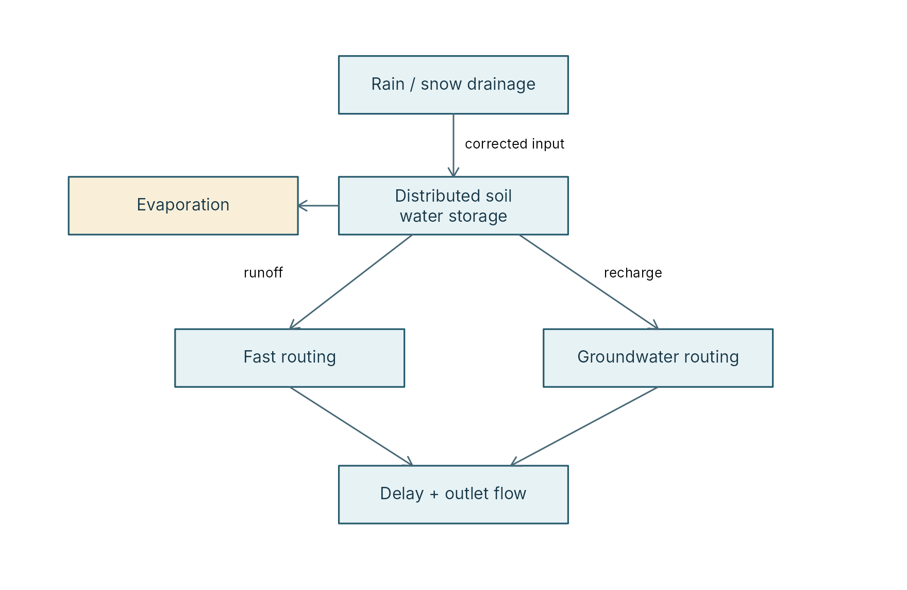
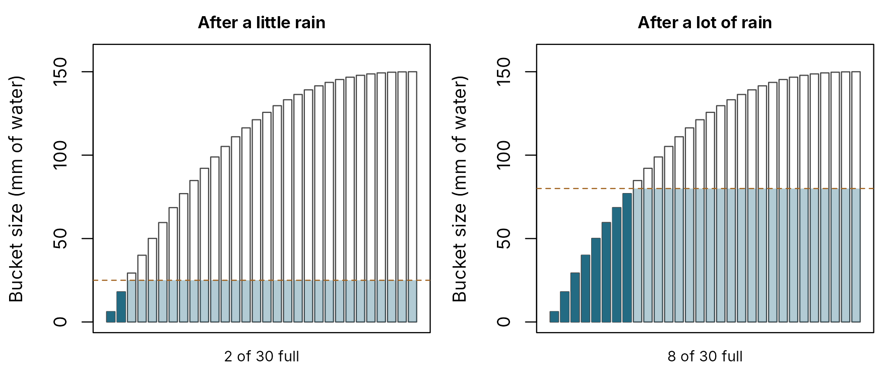
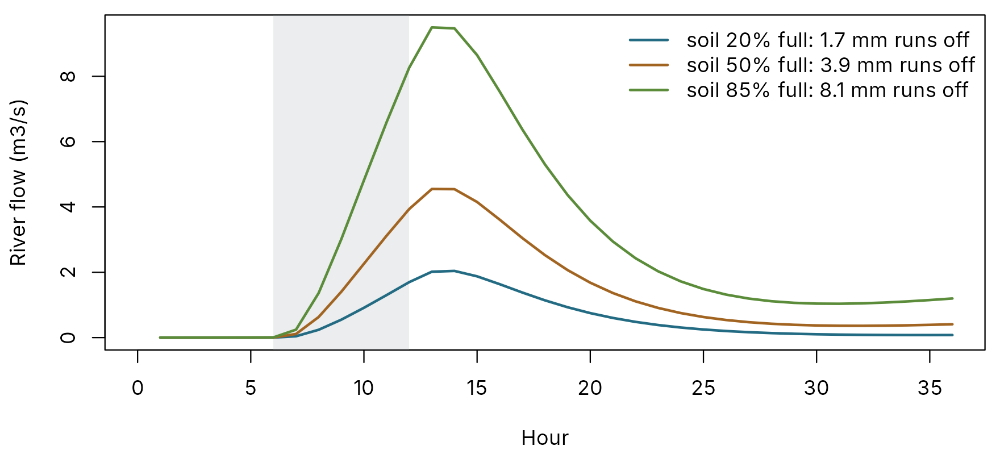
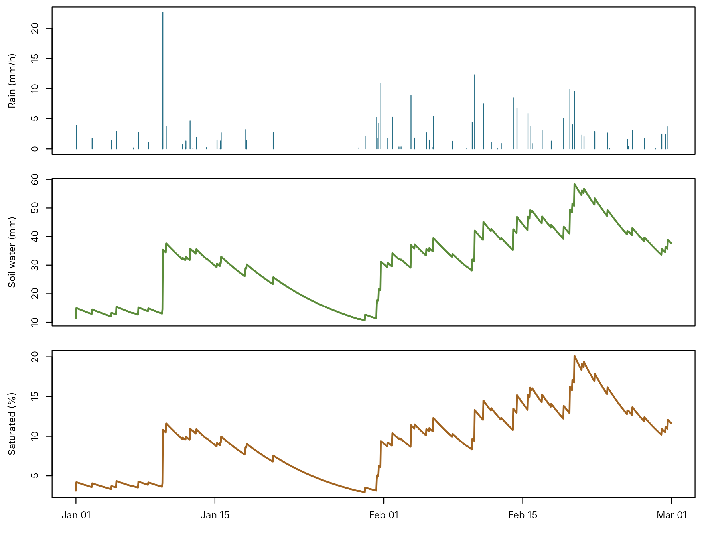
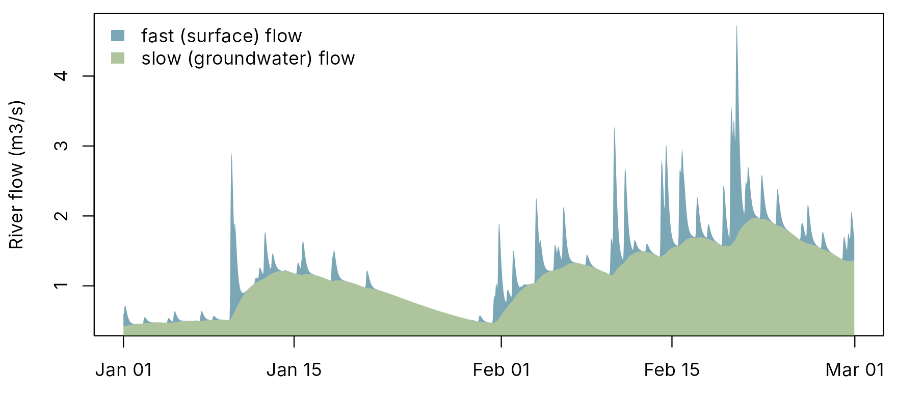
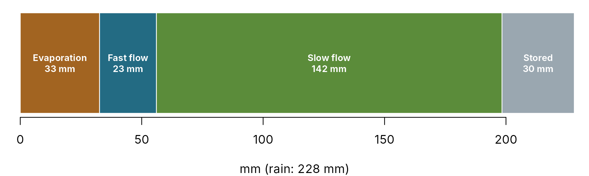
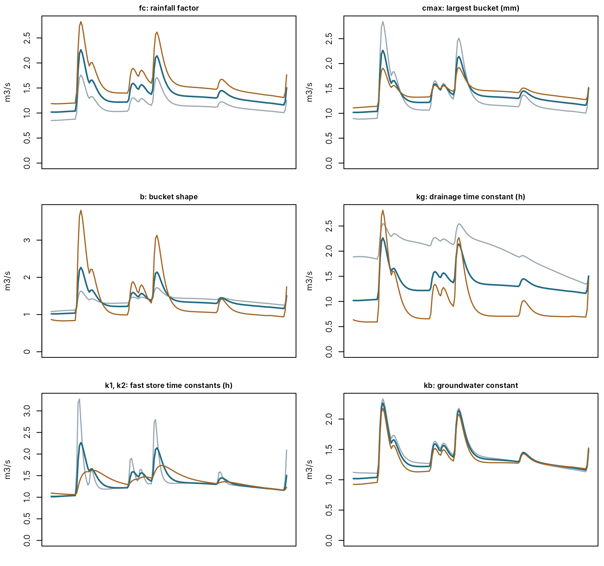

The Probability Distributed Model, or PDM, turns rainfall into river flow. It was developed by Bob Moore at the Institute of Hydrology and is widely used for flood forecasting in the UK. This article explains how it works in plain terms, one idea at a time, with pictures of the model running. The equations are in an appendix at the end, and in full on the Model equations page.
The idea in one picture

The path water takes through the model.
Rain falls on the soil. Some evaporates. Some soaks in and slowly drains down to groundwater. Where the soil is already full, the rain cannot soak in and runs off quickly over or near the surface. The quick water reaches the river within hours; the groundwater seeps out over days and weeks. The river flow is the sum of the two.
Everything else in the model is detail about how much goes each way, and how fast.
A catchment is many buckets of different sizes
The soil in a real catchment is not the same everywhere. A thin soil on a hilltop fills with a few millimetres of rain; a deep soil in a valley can hold a hundred. The PDM does not try to map where each soil is. Instead it imagines the catchment as a great many small buckets of different sizes, and describes only how many buckets there are of each size.

Thirty buckets standing for a catchment’s soils, sorted by size. Rain fills them all to the same level; the dark buckets are full, so any more rain on them runs off. Left: after a little rain. Right: after a lot.
Two things follow from this simple picture:
- The same storm does different things on dry and wet ground. When the soil is dry, few buckets are full and most rain soaks in. When it is wet, many are full and much of the rain runs straight off.
- The share of ground that is “full” grows during a storm. The model calls this the saturated fraction: the share of the catchment where new rain runs off.
Three numbers describe the buckets: the size of the largest
(cmax), the size of the smallest (cmin,
usually zero), and the shape b, which says whether most
buckets are small or most are large. The Pareto distribution shown here
is the standard choice; four others are described in Choosing model components.
The same storm on dry and wet ground
Here one storm, 20 mm over six hours, falls on the same catchment three times: once when the soil is 20 per cent full, once at half full, and once at 85 per cent full.

The same 20 mm storm (shaded) on dry, middling and wet soil. The wetter the soil, the more of the storm runs off and the higher the flood.
On dry ground under 2 mm of the 20 runs off; on wet ground over a third does. This is the heart of the PDM, and why the state of the soil before a storm matters so much to a flood forecast.
Through a wet spell
Over two months of showers and storms, the soil wets up and dries out, and the saturated fraction rises and falls with it.

Two months of hourly rain (top), the water in the soil (middle) and the saturated fraction (bottom). Rain wets the soil and spreads the saturated area; dry days let evaporation and drainage pull both back down.
Between storms the soil loses water two ways: evaporation, which takes more when the soil is wetter, and drainage down to groundwater (called recharge), which also runs faster when the soil is fuller. Both are why the curves sag through the long dry spell in late January, and recover quickly when rain returns.
Two paths to the river
Water that runs off goes through a fast store: in the standard model, two small reservoirs one after the other, which smooth and delay the runoff by a few hours. Water that drains to groundwater goes through a slow store, which releases it over days and weeks. The river flow is the two added together.

River flow split into its two parts. The quick surface part makes the peaks; the slow groundwater part makes the steady flow between them and the long recession.
How fast each store empties is set by its time constant: how
long, roughly, water stays in it. The fast stores have time constants of
hours (k1, k2); the groundwater store’s
constant (kb) is much longer.
Where the water went
Over the two months, every millimetre of rain is accounted for:

Where the two months’ rain went, in millimetres over the catchment.
#> Rain Evaporation Fast flow Slow flow Stored
#> 228.1 32.7 23.4 142.3 29.8What is not evaporated or carried to the river stays in the stores. pdmS7 checks this balance at every time step; it closes to rounding error.
What each setting does
Calibrating a PDM by hand means knowing which setting changes which part of the hydrograph. Each panel below changes one setting, holding the others fixed, over the same week of the wet spell.

One week of flow as each setting is lowered (light), left at its value (dark) and raised (orange).
| Setting | What it changes | Raise it when the model is… |
|---|---|---|
fc |
All rain, before anything else. The whole hydrograph scales with it | Too dry overall |
cmax |
How much the soil can hold. Larger means less runoff and more evaporation | Too flashy, peaks too high |
b |
Whether the catchment has mostly large or mostly small buckets.
Larger b means more small buckets, so more runoff and
higher peaks |
Peaks too low for the size of the storms |
kg |
How slowly soil drains to groundwater. Larger means more surface runoff, less baseflow | Peaks too low and baseflow too high |
k1, k2
|
How quickly runoff reaches the river. Larger means later, lower, broader peaks | Peaks too early or too sharp |
kb |
How slowly groundwater empties. Larger means flatter, longer recessions | Recessions too steep |
td |
A pure delay before water reaches the outlet | Everything is early by a fixed time |
The scorecard points to the right setting:
a volume error suggests fc, peaks too small suggest the
fast stores or kg, and a poor low-flow score suggests
kb.
The equations, briefly
In this appendix, depths are millimetres over the catchment and is the time step in hours. The full set, with Moore’s (2007) equation numbers and every detail of the implementation, is on the Model equations page.
Buckets. If is the share of the catchment whose bucket holds no more than mm, and every bucket is filled to the same level , the soil water averaged over the catchment is
For the Pareto distribution, , and the saturated fraction is .
Evaporation. Actual evaporation is the potential rate reduced as the soil dries, with the mean bucket size:
Drainage to groundwater. Above a threshold (usually zero),
Runoff. Rain left after evaporation and drainage raises the filling level; whatever cannot be stored runs off:
Routing. Each store empties at a rate set by how much it holds: , with for a linear store and for the standard cubic groundwater store.
Flow. The routed depths become flow in m³/s through the catchment area in km²: .
Further reading
- Your first model run puts this into practice on your own data.
- Choosing model components compares the alternative soil stores, drainage rules and routing.
- Starting a run explains why the starting state matters, as the dry-and-wet example above shows.
- Moore, R. J. (2007). The PDM rainfall-runoff model. Hydrology and Earth System Sciences, 11, 483-499. doi:10.5194/hess-11-483-2007.